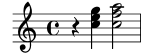
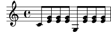

| [ << Common notation ] | [Top][Contents][Index] | [ Fundamental concepts >> ] |
| [ < Staff groups ] | [ Up: Multiple notes at once ] | [ Single-staff polyphony > ] |
3.2.4 Combining notes into chords
Music Glossary: chord.
We saw earlier how notes can be combined into chords: by enclosing them in double angle brackets we indicated that they are simultaneous. However, the normal way of producing a chord is to surround the pitches with single angle brackets. Note that all notes in a chord must have the same duration, and that the duration is placed after the closing bracket.
\relative { r4 <c'' e g> <c f a>2 }
Think of chords as almost equivalent to single notes: virtually everything you can attach to a single note can be attached to a chord, and usually these attachments must be put outside the angle brackets. For example, you can combine markings like beams and ties with chords.
\relative { r4 <c'' e g>~ <c f a>2 | <c e g>8[ <c f a> <c e g> <c f a>] <c e g>8\>[ <c f a> q q]\! | r4 <c e g>8.\p q16( q4-. <c f a>) | }![[image of music]](../a4/lily-b999df29.png)
The above example also demonstrates a very useful feature: a chord can be repeated by using the symbol ‘q’. This even works with interspersed single notes.
\relative { c'8 <e g>8 q q g, q q q }
See also
Notation Reference: Chorded notes.
| [ << Common notation ] | [Top][Contents][Index] | [ Fundamental concepts >> ] |
| [ < Staff groups ] | [ Up: Multiple notes at once ] | [ Single-staff polyphony > ] |